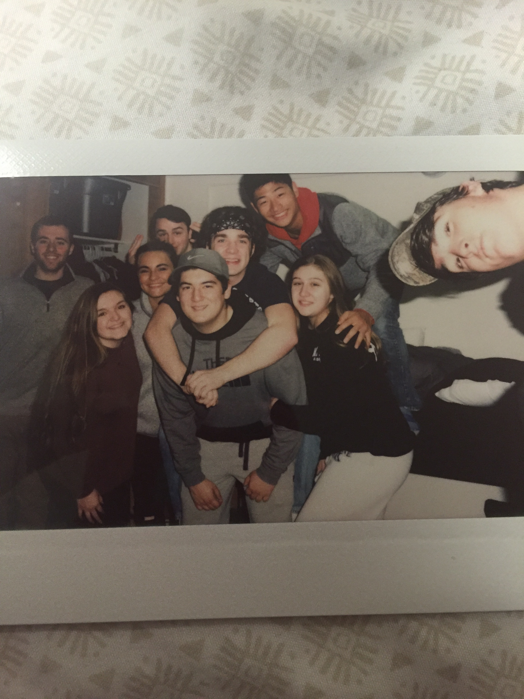
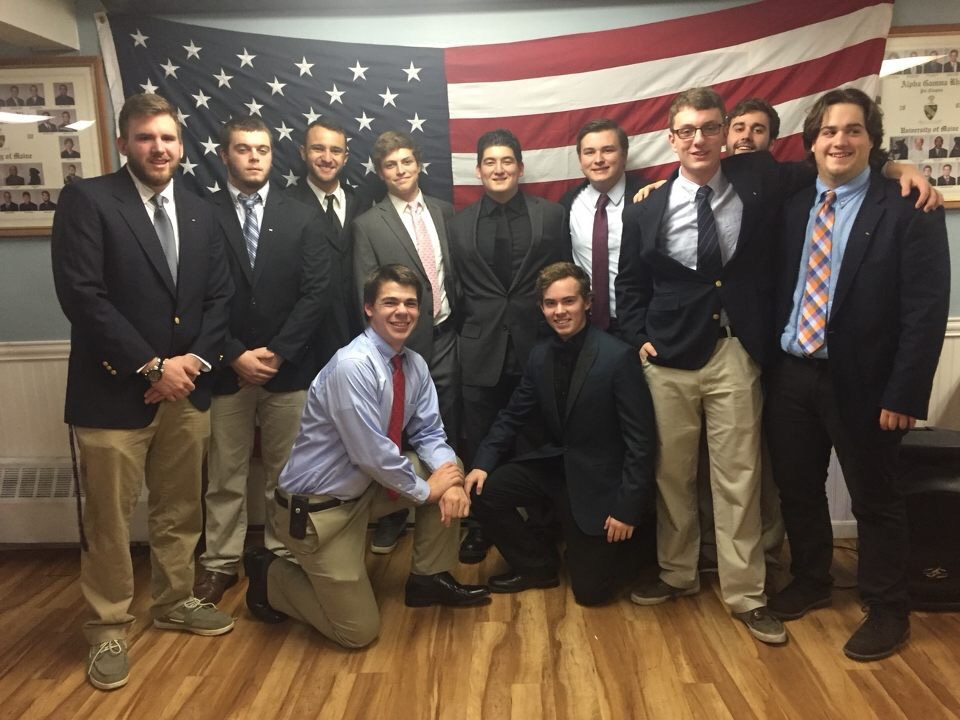

MY COLLEGE LIFE
When I first came to the University of Maine, I did not know what to expect. I was excited and eager, yet nervous and honestly unaware of what I was doing, but then again, who wasn't? The only person I knew coming into college was my girlfriend, Maddie. The first week of classes was awful for me. I went to my girlfriend and broke down, stressing because it was all overwhelming to me, and I had not made any friends yet. I lived in a different hall than her, so she insisted that I come to her dorm more and talk to the residents there. It was great advice, because I ended up making so amazing friends.

Another way I got over my stress was rushing and joining my fraternity. I was at a club fair early in the first semester, and the only people who reached out to me were Alpha Gamma Rho brothers. I had come to college with no intentions of rushing a fraternity, however the persuaded me, and it was one of the best decisions I have made here. Excluding myself, there are 42 brothers, and I have made strong connections with all of them. Despite my difficult experience early on, I am now very much enjoying my college experience.
